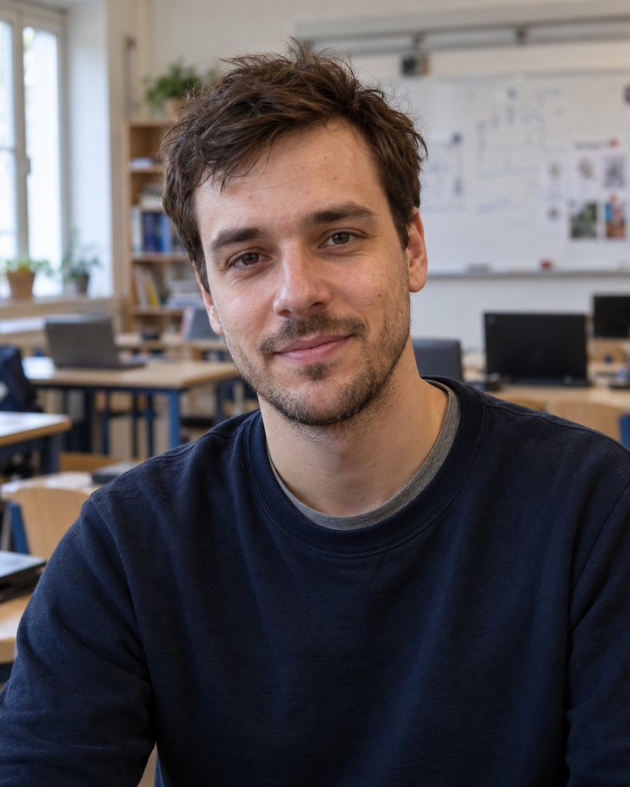

Persona kártya · Digitális alkotóműhely

a digitális innovátor
Dániel szerint a digitális technológia a kreatív alkotás és az együttműködés eszköze. A diákjai alkalmazásokat fejlesztenek, AI-eszközöket próbálnak ki és közösen dolgoznak projekteken. Egy olyan tanulási környezetet képzel el, amely inkább technológiai alkotóműhely, mint hagyományos számítógépterem.
Tanítási filozófia
„A technológia akkor értékes, ha alkotásra és együttműködésre használjuk.”
Nem géptermet szeretnék. A diákjaim projekteken dolgoznak, négyen-öten egy képernyő körül, és az a lényeg, hogy lássák egymás munkáját. Legyen hol hagyni a félkész dolgokat, és legyen hely akkor is, amikor papíron tervezünk, gép nélkül.
Tervezési kihívás
Tervezzenek kreatív technológiai stúdiót, ahol egyéni és csoportos digitális munka is lehetséges.